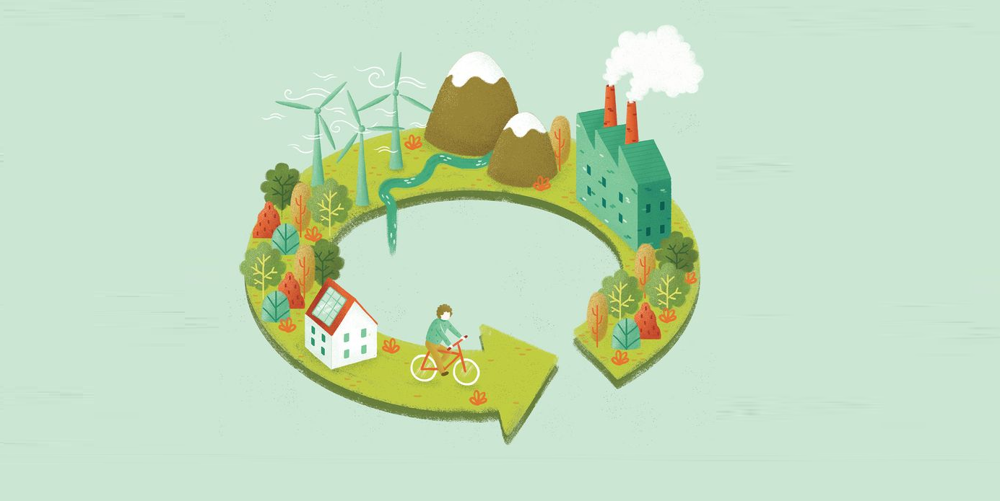

Economia Circular: O Que é e Como Aplicá-la?
Do Lixo ao Luxo: Entenda o Poder da Economia Circular
Em um mundo onde a geração de resíduos atinge níveis alarmantes, a economia circular surge como uma revolução silenciosa. Ela transforma o que antes era considerado lixo em recursos valiosos, abrindo caminho para um futuro sustentável.
O que é Economia Circular?
A economia circular é um modelo econômico que propõe o uso contínuo de recursos, eliminando a ideia de “lixo”. Diferentemente do modelo linear (produzir, usar, descartar), a circularidade busca criar ciclos fechados em que os resíduos de um processo se tornam matéria-prima para outro.

Princípios da Economia Circular
Desenho sustentável: Produtos são criados para durar mais e serem reparados ou reciclados facilmente.
Reuso de materiais: Prioriza o reaproveitamento, reduzindo a necessidade de extrair novos recursos.
Redução de resíduos: Tudo é reaproveitado ao máximo, eliminando o conceito de "descarte".
Energia limpa: O uso de fontes renováveis para alimentar processos produtivos é incentivado.

Por que Apostar na Economia Circular?
Preservação de Recursos Naturais
- Evita a exploração desnecessária de matérias-primas, como minérios e madeira.
- Diminui a pegada ambiental de diversas indústrias.
Redução de Resíduos e Poluição
- Soluções como compostagem e reciclagem minimizam o impacto ambiental de aterros e oceanos poluídos.
Estímulo à Inovação
- Promove a criação de novas tecnologias e modelos de negócios, como aluguel, compartilhamento e upcycling (reutilização criativa).
Economia para Consumidores e Empresas
- Produtos mais duráveis e eficientes reduzem custos a longo prazo.
Exemplos de Economia Circular em Ação
Empresas de moda sustentável: Marcas que utilizam tecidos reciclados ou oferecem programas de recompra de roupas usadas.
Reciclagem tecnológica: Empresas que desmontam dispositivos eletrônicos para reaproveitar seus componentes.
Startups de embalagens retornáveis: Negócios que criam sistemas para reutilização de recipientes.
Indústrias que transformam resíduos em energia: Aproveitamento de sobras agrícolas ou industriais para gerar biocombustíveis.
Como Você Pode Fazer Parte Dessa Transformação?
- Repense o Consumo: Antes de comprar algo novo, considere se você realmente precisa ou se pode reaproveitar algo que já possui.
- Reutilize e Crie: Dê uma nova utilidade a objetos antigos, como transformar potes de vidro em organizadores ou decorações.
- Invista em Produtos Sustentáveis: Prefira itens feitos com materiais reciclados ou que tenham longa durabilidade.
- Recicle de Forma Correta: Separe seus resíduos para coleta seletiva e descarte adequadamente itens como eletrônicos e pilhas.
- Compartilhe e Troque: Doe ou troque objetos que não usa mais, prolongando sua vida útil e ajudando outras pessoas.
Adotar a economia circular não é apenas uma maneira de cuidar do meio ambiente, mas também de transformar o que antes era lixo em oportunidades valiosas. Este modelo nos ensina que sustentabilidade e inovação podem caminhar juntas, criando um futuro mais inteligente e eficiente.
🌱 Dica EcoLógica: Comece agora! Que tal reutilizar algo que você descartaria hoje? Pequenos gestos podem ter um grande impacto.